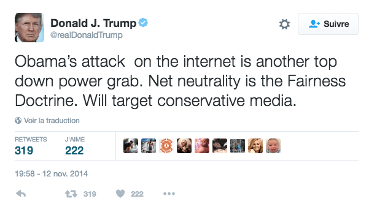

10/11/16 - temps de lecture : 3 minutes
Responsable Marketing et Communication chez The Computer Firm
Les prises de position du Président Trump sur la technologie, Apple, la sécurité informatique, et la liberté d’expression sur internet
Les prises de positions, quelque peu confuses, du nouveau président des Etats-Unis en matière de technologie

Contre toute attente, Donald Trump a été élu hier 45ème président des Etats-Unis.
Nous nous sommes interrogés : comment son élection, dont l’un des principaux arguments de campagne a été son succès dans le monde des affaires, impactera-t-elle l’industrie de la technologie et du numérique ?
Trump a précédemment déclaré qu’il ne se déplaçait pas avec un téléphone portable, et n’utilisait pas d’emails. Durant un débat sur CNN, il a expliqué que la plupart du temps, il compose ses tweets en “les criant à une des jeunes femmes [de son staff], qui sont géniales : je n’ai qu’à les leur crier, et elles le font”. En réalité, l’on en sait peu sur les positions politiques de Trump en matière de technologie.
Nous avons mené l’enquête, et réuni dans cet article certaines des prises de positions sur nouveau présidents des Etats-Unis sur le sujet.
La sécurité informatique
Trump déclare que “l’amélioration de la cybersécurité sera une priorité principale et immédiate de mon investiture”. Sujet évoqué à de nombreuses reprises au cours de sa campagne, il a déclaré sur son site avoir pour projet la mise en place d’un audit complet de toutes les mécanismes de défense et des vulnérabilités des Etats-Unis dans ce domaine, par une équipe de Cyber Review composée d’individus issus à la fois de l’armée, de la justice et du secteur privé, pour protéger le pays contre des “méthodes de cyber-attaques en perpétuelle évolution”
Si cette approche paraît raisonnable, Trump a laissé l’opinion publique perplexe lorsqu’il a évoqué de vive voix les problématiques de cybersécurité.
Durant un débat face à Hillary Clinton, le 26 Septembre, il a déclaré que “[la cyberattaque contre le Comité National démocrate en Juillet], qu’elle ait été initiée par la Russie, ou la Chine, ou un autre pays, on ne peut pas savoir, car le fait est que, sous la présidence d’Obama, nous avons perdus le contrôle de beaucoup de choses que nous contrôlions auparavant. Nous avons créé un internet, nous avons créé l’internet”. Et de poursuivre, “j’ai un fils. Il a 10 ans. Il a des ordinateurs. Il est tellement doué avec ces ordinateurs, c’est incroyable. La problématique de la sécurité du web est très, très dure. Et, peut-être, à peine réalisable.”
Apple
Selon Trump, les entreprises multinationales américaines doivent rapatrier l’intégralité de leur chaîne de production aux Etats-Unis, ainsi que les profits réalisés en dehors du pays. Il a promis l’application de taxes d’import sur les produits étrangers, pour “inciter les entreprises américaines à produire localement, au lieu d’embaucher de la main d’oeuvre peu chère à l’étranger”. Apple a été particulièrement mis sur la sellette, alors qu’il a déclaré durant une conférence de presse en Virginie “Je disais ‘rendons sa grandeur à l’Amérique’, et je pense qu’on peut l’affirmer aujourd’hui, et j’y crois fermement. […] Nous allons forcer Apple à commencer à fabriquer ses fichus ordinateurs et autres dans ce pays, et non à l’étranger”
La politique de visas pour les professionnels qualifiés
Alors que les prises de position anti-immigration de Trump sont au coeur de la polémique, il est intéressant de se pencher sur ses déclarations sur l’immigration de main d’oeuvre qualifiée, sujet qui s’applique particulièrement à l’industrie technologique.
Les déclarations Trump sur le sujet ont été, durant sa campagne, pour le moins contradictoires. Aux Etats-Unis, le visa qui donne droit à un permis de travail attribué aux travailleurs ‘professionnels” est dénommé “H-1b”. “Un candidat au visa H-1b aura au moins un diplôme universitaire de 4 années ou une expérience professionnelle équivalente, et viendra pour travailler dans le domaine de son éducation”. (source)
Il a commencé par affirmer être favorable à cette procédure, à laquelle il a lui-même eu recours dans le passé, en tant qu’employeur (sa femme Melania en a également été bénéficiaire). Il a parallèlement déclaré que ce visa permet d’amener des talents étrangers vers les USA, favorisant ainsi la croissance économique.
Dans un second temps, il est revenu sur sa position, argumentant que le système du H-1b devrait être supprimé car il est, selon lui, l’objet d’abus fréquents, et qu’il restreint l’accès à la Silicon Valley à des travailleurs américains qualifiés.
Il a plus tard manifesté son soutien à la Silicon Valley, lorsqu’elle engage et retient des talents internationaux.
En réaction à l’inconsistance de son discours, The Washington Post a écrit “Nous ne savons pas exactement que penser de sa position, et il n’est pas clair que Trump lui-même le sache”.
Liberté d’expression sur internet
Durant un débat en décembre 2015, Trump a déclaré être ouvert à l’idée de “fermer” une partie du web. “Je serais définitivement ouvert à la restriction de l’accès à certains éléments, si nous sommes en guerre. Bon sang, je ne veux pas laisser des gens qui veulent nous tuer, et tuer notre nation, utiliser notre internet. ISIS utilise internet mieux que nous utilisons internet, et c’était notre idée.”
Trump a également eu du mal à prendre clairement position sur le sujet que la neutralité du réseau. C’est un principe qui affirme qu’internet devrait être accessible à tous, à un coût raisonnable, et sans que les fournisseurs d’accès puissent en restreindre ou promouvoir le contenu. Bien qu’il ait affirmé, comme expliqué ci-dessus, vouloir bloquer l’accès à une partie du web à certains utilisateurs pour protéger la sécurité nationale, Trump en a peu dit en ce qui concerne le développement de l’accès au web pour les citoyens américains. Sa seule référence à la problématique remonte à un tweet de Novembre 2014, où il affirme “l’attaque d’internet par Obama n’est qu’un coup de force venu d’en haut. La neutralité du web […] ne s’applique qu’aux médias républicains.”

Sources de l'article :
http://www.pcmag.com/news/349345/clinton-vs-trump-where-they-stand-on-technology https://www.engadget.com/election-guide/list/5662087c/#5662087c https://www.technologyreview.com/s/602764/six-big-technology-questions-for-president-trump/ http://www.ibtimes.co.uk/where-does-donald-trump-stand-technology-silicon-valley-net-neutrality-apple-1590704 http://www.information-age.com/trump-means-technology-123463107/ http://www.hughhewitt.com/donald-trump-returns/ https://techcrunch.com/2016/11/09/trump-policies/Responsable Marketing et Communication chez The Computer Firm